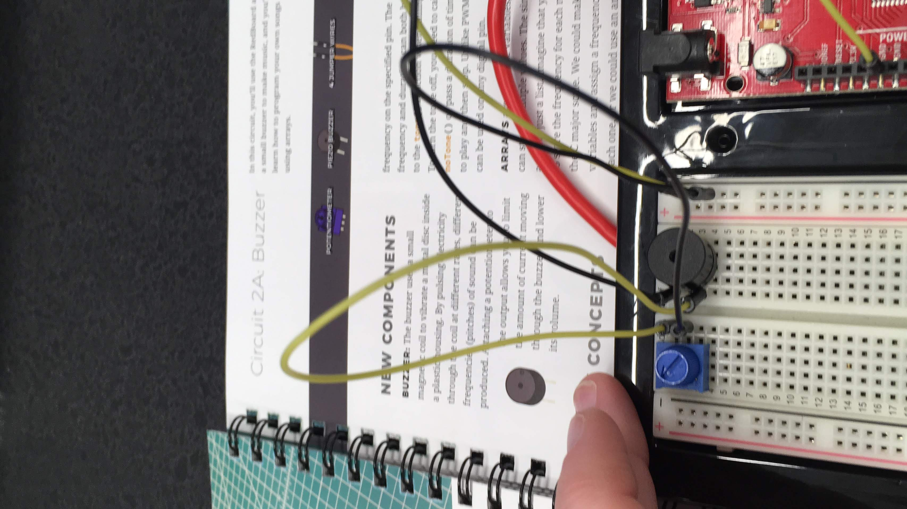
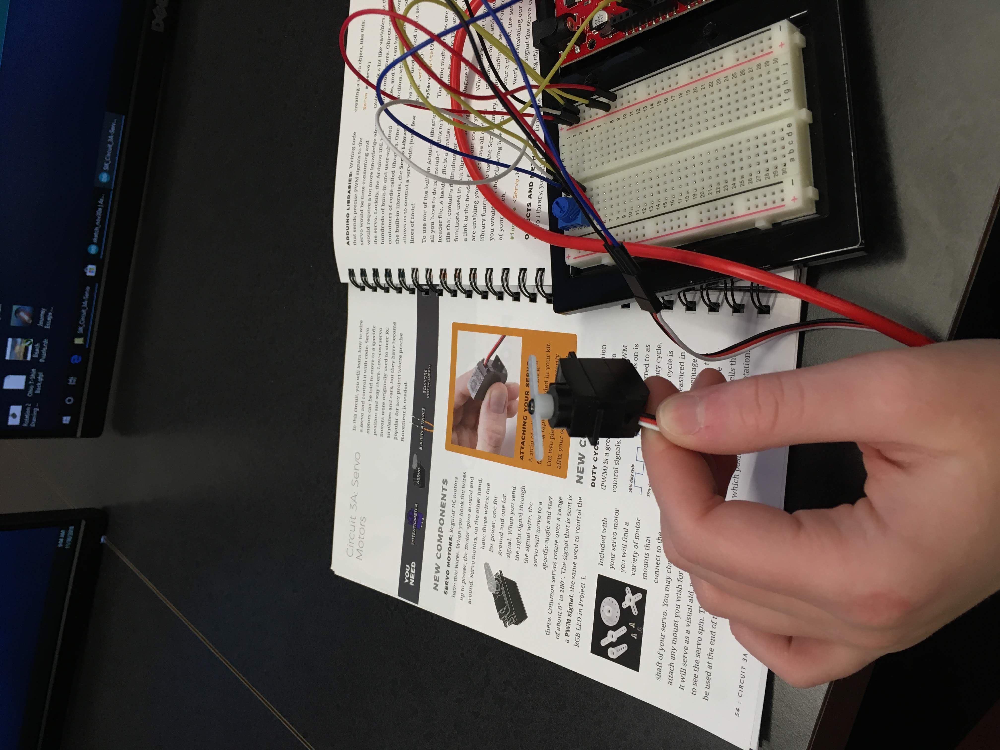

Microprocessors
27 November - 5 December 2018
This week, we worked with Arduino and the Sparkfun Inventors Kit to create computer-controlled circuits. I thought this was a
really cool process because it is so much more practically useful than your average breadboard circuit. This week, we had to
complete the exercises in the book that came with the kit and take pictures of them. Here they are below, in order:


I also was able to edit the code in circuit 1A, the blinking light. In order to make the light blink extremely rapidly, I
changed both spots that said "delay(2000)" to "delay(50)", and the light did, indeed, blink extremely rapidly, once I uploaded
the updated code to my board.